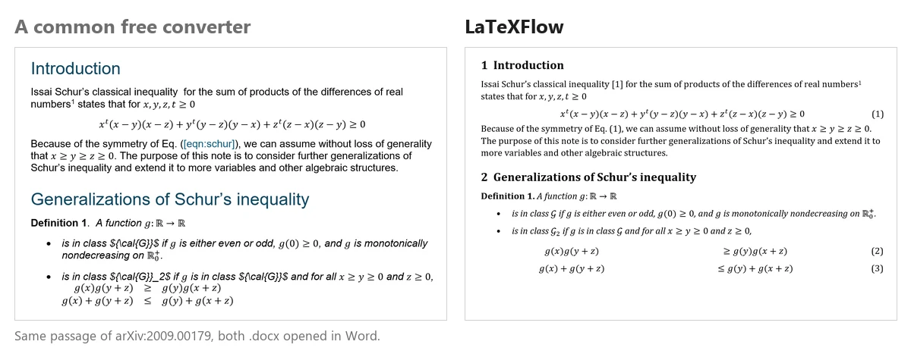
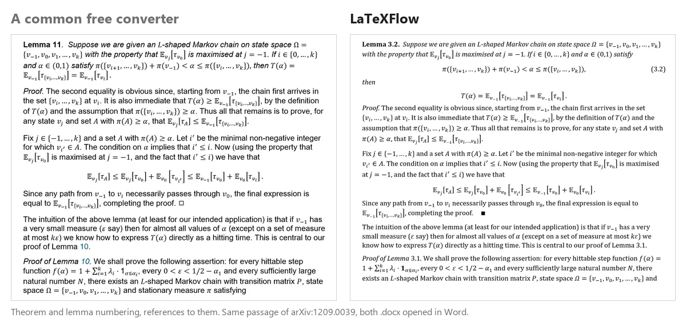
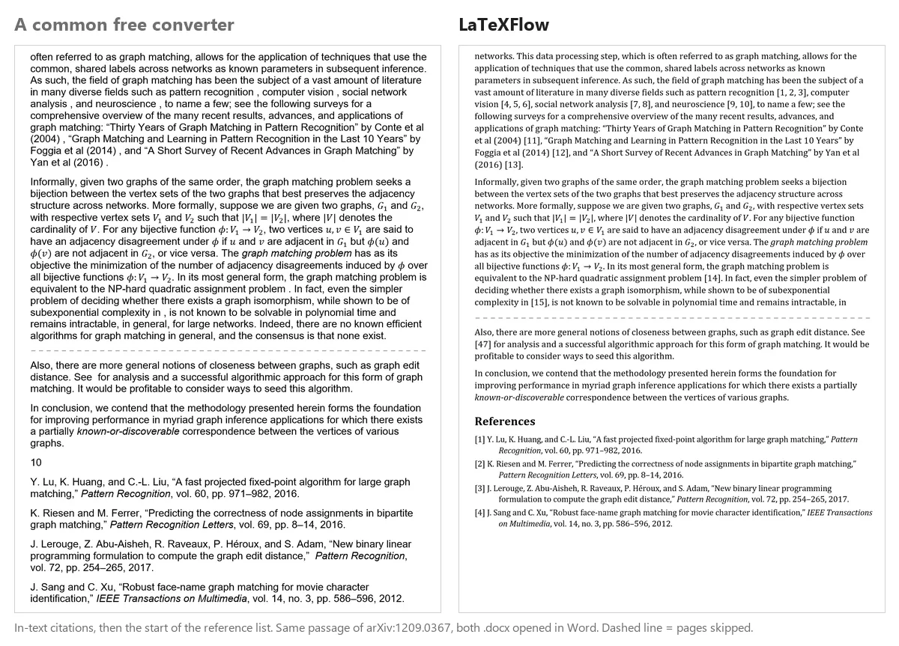
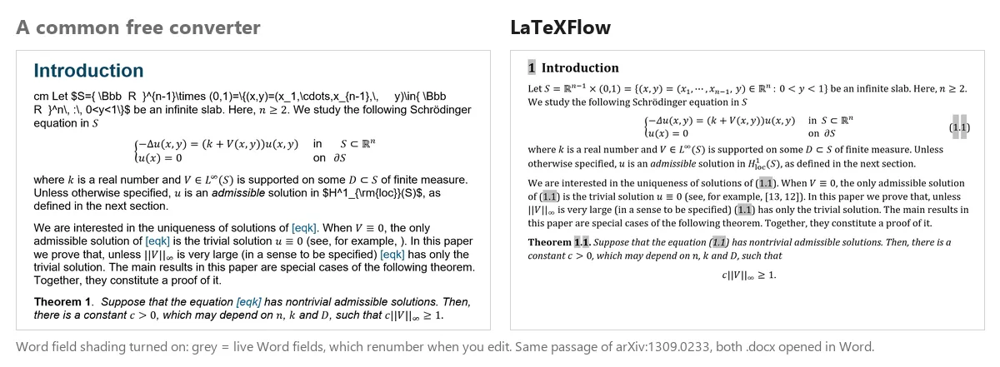
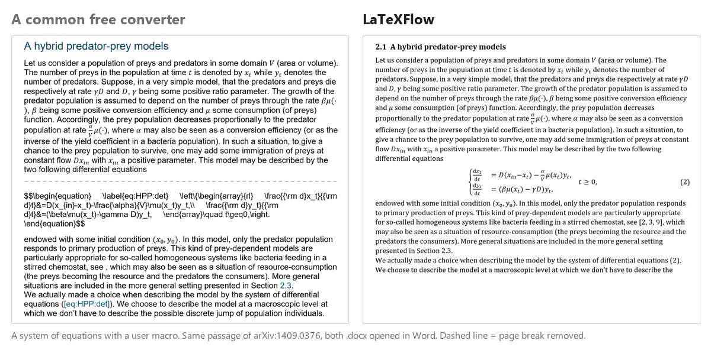

Turn a .tex file into a Word document.
Equations you can edit in Word, with their numbers.
Drop your LaTeX source. The full report and the first 3 pages are free. Equations become Word equations, cross-references and citations carry over, and a report shows what was kept, what changed, and what needs you.
.tex files here.bbl or .bib too · an Overleaf or arXiv source archive works as isWe never share your files or data externally without your consent.
What carries over
- Inline and display math, including
equation,align,gather,casesand matrices, as editable Word equations. - Section, equation, theorem, figure and table numbers, and
\ref/\eqrefas Word cross-references. - Citations and the bibliography from your
.bbl(or a built-in style from your.bib). - Headings, lists, tables with merged cells, footnotes, and your own
\newcommandmacros. - Multi-file papers:
\input,\include,\subfileand\importfiles are read in place, from the files or the.zip/.tar.gzyou drop.
What does not, yet
Images are marked with a placeholder for now (they are not unpacked from an archive), and TikZ drawings and slides (beamer) are not converted. Every gap is listed in the report and marked inside the document, so nothing goes missing silently.
Privacy
The conversion runs in your browser. We never share your files or data externally without your consent. If you enter a license key, only the key and a random id for this browser are sent to our payment provider (Polar) to check it. See the Privacy Policy.
- Reading
- Parsing
- Equations
- Writing





Tested on 53 papers it had never seen: equation numbers 96.1% vs 0.0%, references 93.6% vs 25.5%, citations 92.2% vs 8.2%.